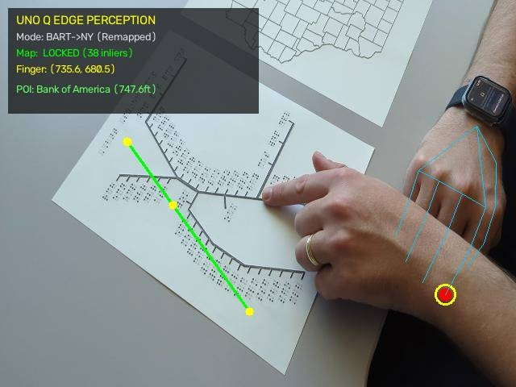
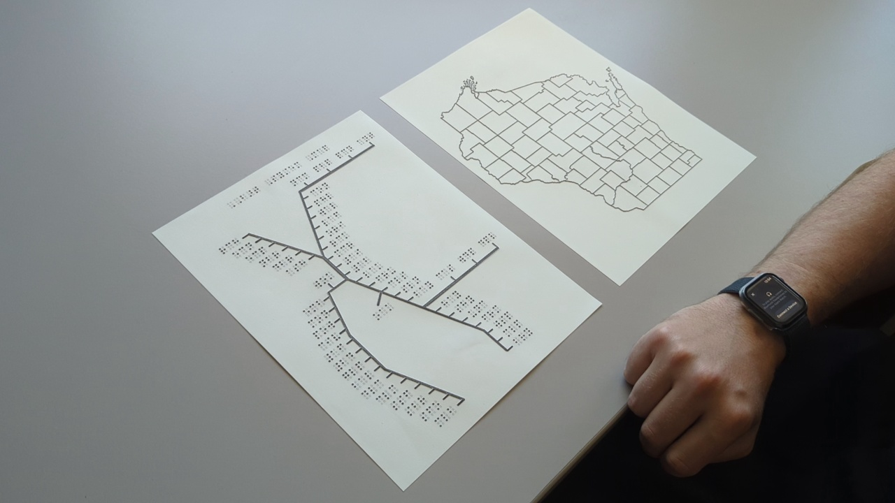
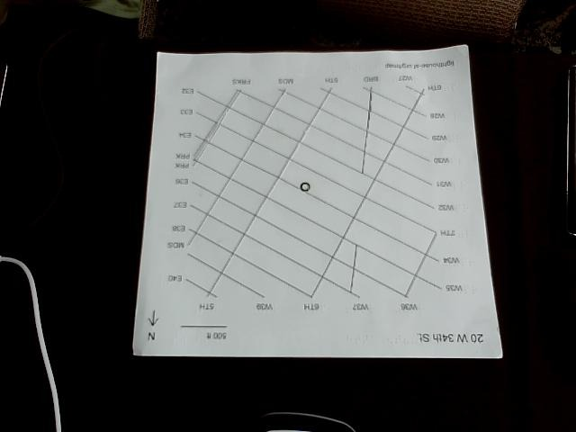
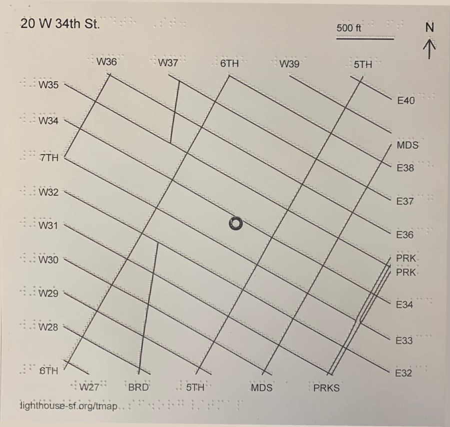
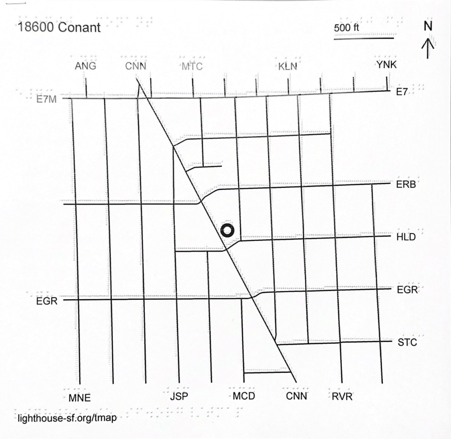
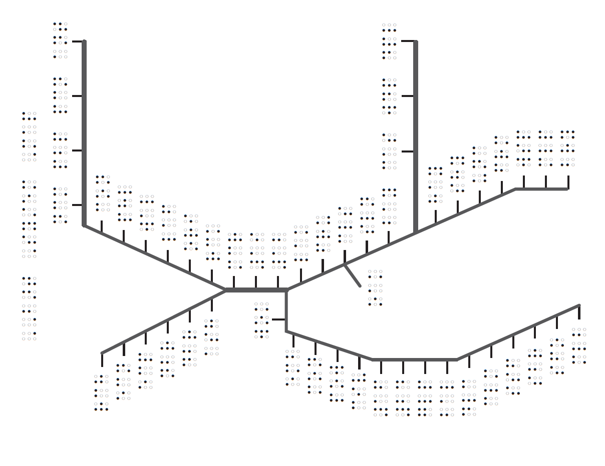

MapIO · Qualcomm Edition
Audio-tactile maps with fingertip tracking, a local LLM on Snapdragon X Elite, and a sub-$60 standalone client on Arduino UNO Q.
Motivation
Turn-by-turn works with a screen reader. But exploring — what's around here, how the streets lie, what's two blocks over — is a visual act. A blind user gets a list, never a layout.
Embossed streets give real spatial layout under the fingers. The price is information density: a sheet fits a dozen braille labels, and nothing else — no store names, hours, distances, or "what is this?"

The idea

Ask anything
"What's the closest place to get coffee, and how far is it from where my finger is?"
Free-form questions are what make exploration feel natural. But distances, directions and "am I here?" must be right, not plausible. So the model doesn't guess — it calls tools on the map graph and speaks the result.
Gemma 4 E2B (Q4) served by Qualcomm AI Hub GenieX on the Snapdragon X Elite — an OpenAI-compatible endpoint on localhost. Private, offline, no per-query cost.
Every question carries the fingertip's map coordinates, so "here", "this", and "nearby" resolve to real places. Tool results are read back as spoken announcements with priority and category, the same pipeline as touch feedback.
Hardware
1local LLM server per room
<$60per map station (QRB2210, Linux)
0wires to the user
System architecture
Design choice
MapIO runs end-to-end on the X Elite (camera, LLM, speech) — that is a valid deployment. Splitting perception onto a UNO Q per map is what makes it deployable at scale.
| Laptop-only | UNO Q station + X Elite server | |
|---|---|---|
| Cost per map | a full laptop, dedicated | <$60 board + webcam; one laptop shared |
| Footprint | laptop on the table, lid open | board tapes under the table; power bank runs it |
| Setup by staff | launch app, pick camera, keep awake | plug in → boots → speaks "Map detected" |
| Touch feedback latency | local | local — perception never crosses the network |
| Many maps, one room | N laptops, N LLM copies | N boards, 1 LLM — questions queue, touch never waits |
| Privacy | on-device | on-premises; nothing leaves the LAN |
| Audio to user | laptop speaker / wired | Bluetooth to the user's own glasses |
Future directions
A museum floor or a classroom: every tactile map gets a UNO Q + camera. All of them speak to one X Elite for STT and Q&A. Per-map cost stays flat; the server cost is paid once.
Whisper-tiny class models fit the QRB2210. With the glasses' mic over HFP, the station transcribes locally and only sends text + position to the server — lower bandwidth, lower load, works over weak Wi-Fi.
The server sees every station's position: "where is the exhibit I was at before?" across rooms, shared routes between maps, and a per-user session that follows the visitor from map to map.
Tactile maps exist in transit hubs, campuses and museums today, mostly unused because they say so little. A camera and a board per sheet turns each one into a place you can ask questions of — without touching the map itself.
Demo
Demo video: NYC street map on a Lighthouse-SF tactile sheet, perception on the UNO Q, speech in the Ray-Ban Meta glasses, questions answered by Gemma on the X Elite.
OpenCV SIFT · MediaPipe Hands · BlueZ 5.82 + PipeWire · espeak-ng · Qualcomm AI Hub GenieX · Gemma 4 E2B (Q4) · Python on Debian (UNO Q) and Windows on ARM64 (X Elite)
New York (Midtown), Detroit (Conant), BART system map


